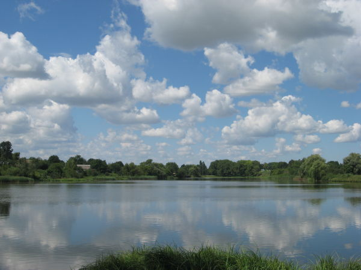
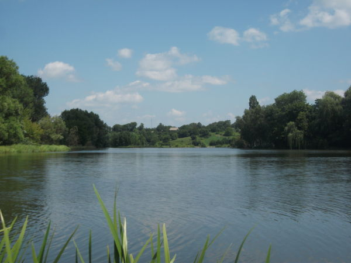

+38(096) 325-42-80
+38(096) 325-42-80 +38(063) 510-73-38
+38(063) 510-73-38 +38(099) 258-62-13
+38(096) 325-42-80 +38(063) 510-73-38 +38(099) 258-62-13
+38(099) 258-62-13
+38(096) 325-42-80 +38(063) 510-73-38 +38(099) 258-62-13
Уланов – крупное село на севере Винниччины, относящееся к Хмельницкому району. Село раскинулось на берегах реки Сниводы, которую здесь перегораживают несколько дамб, вследствие чего на территории Уланова образовалось несколько относительно крупных водохранилищ.
 Предполагается, что название Уланов – татарского происхождения. «Улан» означает «король», «князь». Неизвестно, когда Уланов возник, но в 1552 году он упоминается как разорённый татарами населённый пункт, который польский король передал во владение выходцам из Македонии. При этом Уланов даже на несколько лет освобождался от налогов и мог проводить две ярмарки в год. Городок находился на печально известном Чёрном тракте и неоднократно подвергался набегам турок и татар из Крыма. В начале 17 века Уланов был разрушен, и даже местный замок не помог отбить нападение. Тем не менее, он снова возродился. Здесь было несколько церквей и костёлов, которые были разрушены ещё в 19 веке.
Уланов является родиной святого Феодосия Черниговского (жил в 17 веке) и поэта Валерьяна Тарноградского, именем которого назван местный парк. В Уланове несколько лет провёл Богдан Хмельницкий.
К достопримечательностям Уланова относится замок, точнее то, что он него осталось – незначительные
фрагменты стен, башен и валов. Построенный не позже 16 века, он имел 3 башни и был огорожен валом.
В 1854 году замок практически полностью разобрали на строительство сахарного завода.
Памятником архитектуры национального значения в Уланове является Вознесенская церковь, построенная в 1777 году.
Рядом с ней расположена звонница. В селе есть несколько памятников-мемориалов, в том числе жертвам голодомора 1932-33 годов
и погибшим в Великой Отечественной войне.
Уланов в своё время прославился на всю страну благодаря «картошке по-улановски». Это блюдо, случайно изобретённое местной поварихой, получило в 1965 году всесоюзный кулинарный приз (а изобретательница получила орден), и теперь «картошку по-улановски» можно отведать в ресторанах далеко за пределами села.
Совсем рядом, на растоянии 22 км расположен один из красивейших уголков Украины - известный курортный город Хмельник. Сегодня город развивается как курорт, основным лечебным фактором которого являются минеральные радоновые воды, которые по своему уникальному составу не имеют аналогов среди известных минеральных вод. Вторым по значению лечебным фактором курорта Хмельник является лечебная торфяная грязь.